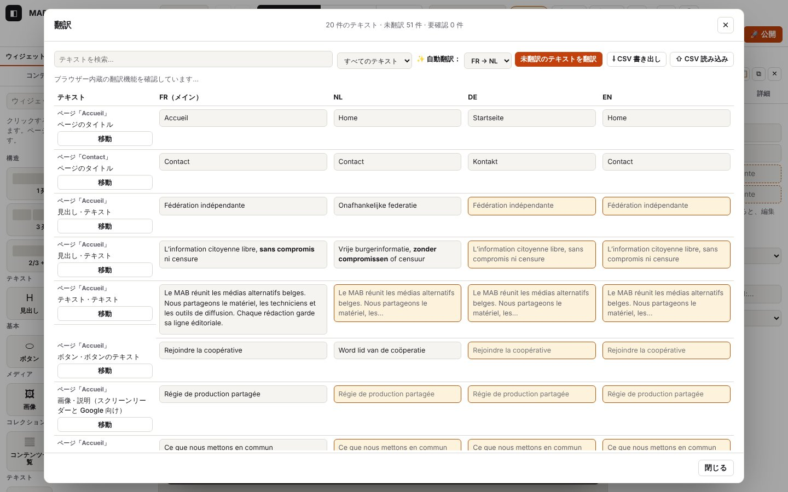

5. 言語と翻訳

このページの内容
以下のログ抜粋はフランス語で記録したものです。コードとレベルはどの言語でも同じです（実際のログのメッセージは表示言語で出ます）。
Atelier のサイトは複数の言語（フランス語、オランダ語、ドイツ語、英語、日本語）で作れます。メイン言語で書いてから翻訳します。翻訳の方法は、翻訳表での手入力、あなたのパソコン上での自動翻訳（Chrome に内蔵された翻訳機能で、サーバーには何も送られません）、または CSV ファイルを翻訳者に渡す方法があります。
ログのドメイン：i18n.*（翻訳表：開く、フィルター、入力、確認、CSV）、translate.*（デバイス上の翻訳：言語の組み合わせごとの翻訳機能の状態、モデルのダウンロード、まとめての翻訳、失敗）、settings.lang-*（サイトの言語、サイトパネル）。
5.1 サイトの言語を選ぶ
目的：言語を追加または削除すること。エディターで表示する言語を切り替えること。
手順
- 左パネルの「サイト」タブ：言語にチェックを入れる、または外します（メイン言語のチェックは外せません）。
- 上部の言語メニューで、キャンバスに表示する言語を切り替えます（そのとき編集するのはその言語です）。
表示される内容：その言語が上部のメニューと翻訳表の列に現れ、テキストは「未翻訳」になります。外した言語は公開サイトから消えますが、翻訳はプロジェクトに残ります（もう一度チェックすれば戻ります）。
期待されるログ（journaux/langues-site.log、canvas.* の行は省略）
技術的な詳細：想定されるログ
21:49:07.943 +9.66s INFO settings.lang-remove Langue retirée : English (ses traductions restent dans le projet) {"lang":"en","languages":["fr","nl","de"],"main":"fr"}
21:49:07.944 +9.66s DEBUG store.view Vue :
…
21:49:08.298 +10.02s DEBUG store.view Vue : lang=nl {"lang":"nl"}
…
21:49:08.636 +10.36s DEBUG store.view Vue : lang=fr {"lang":"fr"}
…
21:49:08.893 +10.61s INFO settings.lang-add Langue ajoutée : English (textes à traduire) {"lang":"en","languages":["fr","nl","de","en"],"main":"fr"}
21:49:08.893 +10.61s DEBUG store.view Vue : 確認すること：settings.lang-remove、続いて更新された languages 一覧付きの settings.lang-add。表示する言語を切り替えると lang=nl 付きの store.view。
ほかのパターン
| 状況 | 変わること | ログ |
|---|---|---|
| 表示する言語を切り替える | その言語でキャンバスが再読み込みされます | store.view {"lang":"nl"}、続いて canvas.load.*（第2章） |
エラー
| 状況 | 表示されるメッセージ | ログ | 対処 |
|---|---|---|---|
| メイン言語のチェックを外そうとした | できません（チェックボックスが灰色） | なし | 先にメイン言語を変えてください |
5.2 翻訳表を開く、絞り込む、検索する、入力する
目的：サイトのすべてのテキストを言語ごとの列で見て、足りないものを埋めること。
手順
- 上部バー：「🌐 翻訳」（または Ctrl+K で「翻訳表」）。
- フィルター：「すべてのテキスト」「未翻訳のみ」「要確認の自動翻訳」。「テキストを検索…」フィールドもあります。
- セルをクリックして訳を入力します。セルを離れると保存されます。
- 「移動」で表が閉じ、ページ上のそのテキストが表示されます。
表示される内容：上部に「24 件のテキスト · 未翻訳 59 件 · 要確認 6 件」。足りないセルには色が付いています。
期待されるログ（journaux/langues-tableau.log）
技術的な詳細：想定されるログ
21:49:05.076 +6.80s INFO i18n.open Tableau des traductions : 23 textes, 56 traduction(s) manquante(s), 6 à relire {"languages":["fr","nl","de","en"],"main":"fr","filter":"all","visible":23,"shown":23,"missing":56,"review":6,"mtLang":"nl"}
21:49:05.077 +6.80s WARN translate.absent Pas d’API Translator dans ce navigateur (Chrome 138+ sur ordinateur) : export CSV proposé {"from":"fr","to":"nl","ua":"HeadlessChrome 141, Not?A_Brand 8, Chromium 141"}
21:49:05.112 +6.83s DEBUG i18n.filter Filtre : missing (20 textes) {"filter":"missing","visible":20,"shown":20,"missing":56,"review":6}
…
21:49:05.292 +7.01s DEBUG i18n.filter Filtre : all (23 textes) {"filter":"all","visible":23,"shown":23,"missing":56,"review":6}
…
21:49:05.507 +7.23s DEBUG i18n.edit Traduction saisie (de) {"key":"n:p_mmlk9wyr:n_5y4p1n6860:text","lang":"de","len":23}確認すること：i18n.open は、表示中のテキストの数（visible）、未翻訳の数（missing）、要確認の数（review）、自動翻訳の翻訳先言語（mtLang）を示します。その直後の translate.* の行が、Chrome の翻訳機能を使えるかどうかを示します（ここでは translate.absent：テスト用のブラウザーには API がありません）。i18n.filter はフィルターと行数を、i18n.edit はテキストのキー、言語、入力した長さを示します。
ほかのパターン
| 状況 | 変わること | ログ |
|---|---|---|
| 検索 | 1 文字ごとに一覧が絞り込まれます | i18n.search（TRACE：?trace のときだけ見えます）{"len":4,"visible":1} |
| テキストが 300 件を超える | 「さらに表示」ボタン | i18n.more（DEBUG）{"shown":600,"visible":812} |
| 「移動」 | 表が閉じ、ページ上でそのテキストが選択されます | key と lang 付きの i18n.go（DEBUG）、続いて store.select |
| セルを空にした | 訳が消えます（代わりにメイン言語が表示されます） | "empty":true 付きの i18n.edit |
エラー
| 状況 | 表示されるメッセージ | ログ | 対処 |
|---|---|---|---|
| テキストを拒否された（サイトにない言語、入力中にキーが消えた） | 赤いエラーメッセージ | key、lang、エラー付きの i18n.edit-fail（WARN） | 表を閉じて開き直してください。繰り返す場合はログを送ってください |
5.3 デバイス上で自動翻訳する
目的：テキストをオンラインのサービスに送らずに、ある言語の未翻訳をまとめて埋めること。
手順
- 表の中で「✨ 自動翻訳：」：言語の組み合わせを選びます（例：「FR → EN」）。
- バーの下のメッセージで、翻訳機能の準備ができているか、これからダウンロードされるかがわかります。
- 「未翻訳のテキストを翻訳」。「■ 停止」でいつでも中断できます。
表示される内容：「English に翻訳中：12 / 21…」、続いて「完了：21 件のテキストを翻訳。確認してください：「要確認」になっています。」。フィルターは「要確認」に切り替わります。
期待されるログ — Chrome の翻訳機能、モデルのダウンロードが必要な場合（journaux/langues-translator-chrome.log）
技術的な詳細：想定されるログ
21:49:07.095 +8.81s INFO translate.status Traducteur fr → nl : downloadable (modèle à télécharger au premier clic) {"from":"fr","to":"nl","state":"downloadable","ms":0,"source":"chrome"}
21:49:07.113 +8.83s INFO translate.status Traducteur fr → de : downloadable (modèle à télécharger au premier clic) {"from":"fr","to":"de","state":"downloadable","ms":0,"source":"chrome"}
21:49:07.169 +8.89s INFO translate.batch.start [translate.batch#4] Traduction automatique fr → de {"from":"fr","to":"de"}
21:49:07.170 +8.89s INFO translate.model.start [translate.model#2] Préparation du traducteur fr → de {"from":"fr","to":"de"}
21:49:07.181 +8.90s DEBUG translate.model.download [translate.model#2 · 11 ms] Téléchargement du modèle fr → de : 30 % {"pct":30}
21:49:07.186 +8.91s DEBUG translate.model.download [translate.model#2 · 16 ms] Téléchargement du modèle fr → de : 60 % {"pct":60}
21:49:07.192 +8.91s DEBUG translate.model.download [translate.model#2 · 22 ms] Téléchargement du modèle fr → de : 100 % {"pct":100}
21:49:07.197 +8.92s INFO translate.model.ok [translate.model#2 · 27 ms] Traducteur fr → de prêt {"downloaded":true}
21:49:07.198 +8.92s DEBUG translate.batch.ready [translate.batch#4 · 29 ms] Traducteur prêt : traduction des textes manquants
21:49:07.199 +8.92s DEBUG translate.batch.progress [translate.batch#4 · 30 ms] 1 / 5 textes {"done":1,"total":5,"count":1,"errors":0}
21:49:07.200 +8.92s DEBUG translate.batch.progress [translate.batch#4 · 31 ms] 2 / 5 textes {"done":2,"total":5,"count":2,"errors":0}
21:49:07.200 +8.92s DEBUG translate.batch.progress [translate.batch#4 · 31 ms] 3 / 5 textes {"done":3,"total":5,"count":3,"errors":0}
21:49:07.200 +8.92s DEBUG translate.batch.progress [translate.batch#4 · 31 ms] 4 / 5 textes {"done":4,"total":5,"count":4,"errors":0}
21:49:07.201 +8.92s DEBUG translate.batch.progress [translate.batch#4 · 32 ms] 5 / 5 textes {"done":5,"total":5,"count":5,"errors":0}
…
21:49:07.209 +8.93s INFO translate.batch.ok [translate.batch#4 · 40 ms] 5 texte(s) traduit(s) fr → de, marqués « à relire » {"count":5,"errors":0,"total":5}
21:49:07.256 +8.98s INFO translate.status Traducteur fr → nl : downloadable (modèle à télécharger au premier clic) {"from":"fr","to":"nl","state":"downloadable","ms":0,"source":"chrome"}
21:49:07.307 +9.03s INFO translate.batch.start [translate.batch#5] Traduction automatique fr → nl {"from":"fr","to":"nl"}
…
21:49:07.308 +9.03s DEBUG translate.batch.ready [translate.batch#5 · 1 ms] Traducteur prêt : traduction des textes manquants
21:49:07.309 +9.03s DEBUG translate.batch.progress [translate.batch#5 · 2 ms] 1 / 10 textes {"done":1,"total":10,"count":1,"errors":0}
21:49:07.311 +9.03s DEBUG translate.batch.progress [translate.batch#5 · 4 ms] 3 / 10 textes {"done":3,"total":10,"count":3,"errors":0}
21:49:07.313 +9.03s DEBUG translate.batch.progress [translate.batch#5 · 6 ms] 5 / 10 textes {"done":5,"total":10,"count":5,"errors":0}
21:49:07.315 +9.04s DEBUG translate.batch.progress [translate.batch#5 · 8 ms] 8 / 10 textes {"done":8,"total":10,"count":8,"errors":0}
21:49:07.317 +9.04s DEBUG translate.batch.progress [translate.batch#5 · 10 ms] 10 / 10 textes {"done":10,"total":10,"count":10,"errors":0}
…
21:49:07.330 +9.05s INFO translate.batch.ok [translate.batch#5 · 23 ms] 10 texte(s) traduit(s) fr → nl, marqués « à relire » {"count":10,"errors":0,"total":10}確認すること：translate.status は言語の組み合わせごとの状態（available、downloadable、downloading）を示します。translate.batch の流れの中に translate.model の流れ（翻訳機能の作成。ダウンロードの進み具合は translate.model.download）があり、続いてだいたい 4 分の 1 ごとに translate.batch.progress、最後に count、errors、total と角括弧内の合計時間付きの translate.batch.ok が出ます。翻訳したテキストごとに translate.text（TRACE：長さと所要時間）も記録され、?trace で見えます。
ほかのパターン
| 状況 | 変わること | ログ |
|---|---|---|
| テスト用の翻訳機能（自動テスト） | 「テスト用の翻訳機能」 | translate.status {"source":"test"}。translate.model.* の代わりに translate.create（DEBUG）（journaux/langues-traduction-auto.log） |
| 同じ組み合わせで 2 回目 | ダウンロードなし | translate.model.* の代わりに translate.reuse（DEBUG）「翻訳機能 … は準備済み」 |
| すべて翻訳済み | 「完了：0 件のテキストを翻訳」 | translate.batch.ok {"count":0,"total":0} |
| 「停止」をクリックした | 「中断：7 件のテキストを翻訳」。翻訳済みのものは残ります | translate.batch.cancel（INFO）{"count":7,"total":17}（journaux/langues-traduction-arret.log） |
| 言語が 1 つだけのサイト | 「このサイトの言語は 1 つだけです。」 | translate.single-lang（DEBUG） |
「停止」の抜粋：
技術的な詳細：想定されるログ
21:49:06.719 +8.44s INFO translate.batch.start [translate.batch#3] Traduction automatique fr → nl {"from":"fr","to":"nl"}
…
21:49:06.761 +8.48s DEBUG translate.batch.progress [translate.batch#3 · 42 ms] 1 / 16 textes {"done":1,"total":16,"count":1,"errors":0}
21:49:06.884 +8.60s DEBUG translate.batch.progress [translate.batch#3 · 165 ms] 4 / 16 textes {"done":4,"total":16,"count":4,"errors":0}
…
21:49:06.987 +8.71s INFO translate.batch.cancel [translate.batch#3 · 268 ms] Arrêté par la personne : 6 / 16 textes traduits {"count":6,"errors":0,"total":16}エラー
| 状況 | 表示されるメッセージ | ログ | 対処 |
|---|---|---|---|
| Translator API のないブラウザー（Firefox、Safari、Chrome 138 未満、モバイル） | 「デバイス上の自動翻訳には、デスクトップの Chrome 138 以降が必要です。表を CSV に書き出して翻訳者に渡すこともできます。」。ボタンは灰色 | ブラウザー（ua）付きの translate.absent（WARN） | デスクトップで新しい Chrome を使うか、CSV で書き出してください（5.5） |
| Chrome が対応していない言語の組み合わせ | 「このデバイスの Chrome は FR → EN の翻訳に対応していません。」 | translate.unavailable（WARN） | 別の組み合わせにするか、CSV を使ってください |
| Chrome が 4 秒以内に応答しない | 「このデバイスでは Chrome が自動翻訳に応答しません…」 | translate.timeout（WARN） | Chrome を再起動し、chrome://on-device-internals を確認してください |
availability() がエラーを返した | 「自動翻訳を利用できません：…」 | error.name 付きの translate.status-fail（WARN） | ログを送ってください |
| ダウンロードが拒否された（ユーザー操作が必要） | 「自動翻訳できませんでした：Requires a user gesture…」 | クリックが必要という説明（hint）付きの translate.model.fail（ERROR）、続いて translate.batch.fail（ERROR） | ボタンをもう一度クリックしてください（ダウンロードはクリックから始める必要があります） |
| 一部のテキストが失敗した | 「完了：15 件のテキストを翻訳、5 件失敗」 | テキストごとの translate.text-fail（WARN）（長さ、エラー）、translate.batch.errors（WARN）、続いて errors 付きの translate.batch.ok | もう一度実行してください。未翻訳のものだけが対象になります |
「Chrome の翻訳機能のエラー」の抜粋（journaux/langues-translator-erreurs.log）：
技術的な詳細：想定されるログ
21:49:07.417 +9.14s WARN translate.unavailable Chrome ne propose pas fr → en sur cet appareil {"from":"fr","to":"en","state":"unavailable","ms":0}
…
21:49:07.484 +9.20s INFO translate.batch.start [translate.batch#6] Traduction automatique fr → en {"from":"fr","to":"en"}
21:49:07.484 +9.20s INFO translate.model.start [translate.model#3] Préparation du traducteur fr → en {"from":"fr","to":"en"}
21:49:07.484 +9.20s ERROR translate.model.fail [translate.model#3 · 0 ms] Traducteur fr → en impossible : NotAllowedError — Requires a user gesture when availability is "downloadable". {"from":"fr","to":"en","hint":"Chrome exige un clic de la personne pour télécharger le modèle de traduction (geste…
21:49:07.486 +9.21s ERROR translate.batch.fail [translate.batch#6 · 2 ms] Traduction automatique impossible : Requires a user gesture when availability is "downloadable". {"from":"fr","to":"en","error":{"name":"NotAllowedError","message":"Requires a user gesture when availability is \"downloadable\…
21:49:07.506 +9.23s WARN translate.status-fail Translator.availability(fr → nl) a échoué : OperationError — Service indisponible (simulé) {"from":"fr","to":"nl","ms":0,"error":{"name":"OperationError","message":"Service indisponible (simulé)","code":0}}「一部の失敗」の抜粋（journaux/langues-traduction-echecs.log）：
技術的な詳細：想定されるログ
21:49:06.451 +8.17s INFO translate.batch.start [translate.batch#2] Traduction automatique fr → de {"from":"fr","to":"de"}
…
21:49:06.454 +8.17s WARN translate.text-fail Traduction fr → de d’un texte impossible : UnknownError — Unable to translate (simulé) {"from":"fr","to":"de","inLen":23,"ms":0,"error":{"name":"UnknownError","message":"Unable to translate (simulé)","code":0}}
…
21:49:06.456 +8.18s WARN translate.text-fail Traduction fr → de d’un texte impossible : UnknownError — Unable to translate (simulé) {"from":"fr","to":"de","inLen":11,"ms":0,"error":{"name":"UnknownError","message":"Unable to translate (simulé)","code":0}}
…
21:49:06.459 +8.18s WARN translate.text-fail Traduction fr → de d’un texte impossible : UnknownError — Unable to translate (simulé) {"from":"fr","to":"de","inLen":15,"ms":0,"error":{"name":"UnknownError","message":"Unable to translate (simulé)","code":0}}
…
21:49:06.460 +8.18s WARN translate.text-fail Traduction fr → de d’un texte impossible : UnknownError — Unable to translate (simulé) {"from":"fr","to":"de","inLen":17,"ms":0,"error":{"name":"UnknownError","message":"Unable to translate (simulé)","code":0}}
21:49:06.461 +8.18s WARN translate.text-fail Traduction fr → de d’un texte impossible : UnknownError — Unable to translate (simulé) {"from":"fr","to":"de","inLen":1,"ms":0,"error":{"name":"UnknownError","message":"Unable to translate (simulé)","code":0}}
…
21:49:06.470 +8.19s WARN translate.batch.errors [translate.batch#2 · 19 ms] 5 texte(s) non traduit(s) (voir translate.text-fail) {"errors":5,"total":19}
21:49:06.470 +8.19s INFO translate.batch.ok [translate.batch#2 · 19 ms] 14 texte(s) traduit(s) fr → de, marqués « à relire » {"count":14,"errors":5,"total":19}5.4 自動翻訳を確認する
目的：機械（翻訳機能またはオンデバイスAI）が書いたものを承認すること。
手順
- フィルター「要確認の自動翻訳」。
- 必要ならセルを直してから「✓ 承認」。ページ上でテキストを直接直しても承認されます。
表示される内容：「自動翻訳（要確認）」のラベルが消え、「要確認」のカウンターが減ります。書き出し前のチェック（第8章）で、まだ確認が残っているものが示されます。
期待されるログ（journaux/langues-traduction-auto.log）
技術的な詳細：想定されるログ
21:49:06.069 +7.79s DEBUG i18n.review-ok Traduction automatique validée {"key":"p:p_mmlk9wyr:seo","lang":"fr"}i18n.review-ok（DEBUG）は承認したキーと言語を示し、続いて store.commit が出ます。
5.5 翻訳者のために CSV を書き出す、読み込む
目的：表計算ソフトを使って、人にサイトを翻訳してもらうこと。
手順
- 「⇩ CSV 書き出し」：
<site>-traductions.csvというファイル（UTF-8、言語ごとに 1 列、key列は触らないでください）。 - 翻訳者が列を埋めて、CSV（カンマ区切りまたはセミコロン区切り）で保存します。
- 「⇧ CSV 読み込み」：変更されたテキストが更新されます。
表示される内容：「読み込み完了：1 件のテキストを更新、1 行をスキップ（削除済みまたは不明なテキスト）。」
期待されるログ（journaux/langues-csv.log）
技術的な詳細：想定されるログ
21:49:07.650 +9.37s INFO i18n.csv-export Tableau exporté en CSV : 22 ligne(s) {"rows":22,"languages":["fr","nl","de","en"],"size":5285}
…
21:49:07.690 +9.41s INFO i18n.csv-import.start [i18n.csv-import#1] Import CSV : traductions.csv {"name":"traductions.csv","size":5726,"type":"text/csv"}
21:49:07.700 +9.42s DEBUG i18n.csv-import.parsed [i18n.csv-import#1 · 10 ms] 23 ligne(s) lues {"rows":23,"columns":["key","type","fr","nl","de","en","ja"]}
21:49:07.702 +9.42s WARN i18n.csv-import.unknown-rows [i18n.csv-import#1 · 12 ms] 1 ligne(s) ignorée(s) : clé inconnue (texte supprimé depuis l’export ?) {"unknown":1,"keys":["n:inconnue:zz:text"]}
21:49:07.703 +9.42s WARN i18n.csv-import.unknown-columns [i18n.csv-import#1 · 13 ms] Colonne(s) ignorée(s) : ja (langue absente du site) {"columns":["ja"]}
…
21:49:07.713 +9.43s INFO i18n.csv-import.ok [i18n.csv-import#1 · 23 ms] Import terminé : 1 texte(s) mis à jour, 1 ligne(s) ignorée(s) {"changed":1,"unknown":1}確認すること：i18n.csv-export（行数、言語）。i18n.csv-import の流れ：parsed（読み取った行と列）、続いて changed（変更されたテキスト）と unknown（拒否された行）付きの ok。
ほかのパターン
| 状況 | 変わること | ログ |
|---|---|---|
| キーがもう存在しない行（書き出しの後にテキストを削除した） | スキップされ、メッセージの件数に含まれます | 最初の 5 つのキー付きの i18n.csv-import.unknown-rows（WARN） |
サイトにない言語の列（例：ja） | その列はスキップされます | i18n.csv-import.unknown-columns（WARN） |
| 何も変わらなかった | 「読み込み完了：0 件のテキストを更新」 | i18n.csv-import.ok {"changed":0} |
エラー
| 状況 | 表示されるメッセージ | ログ | 対処 |
|---|---|---|---|
key 列のないファイル（Atelier から書き出したものではない） | 「CSV ファイルを認識できません：key 列がありません…」 | ファイル名付きの i18n.csv-import.fail（ERROR） | Atelier から書き出したファイルを使い、key 列を残してください |
技術的な詳細：想定されるログ
21:49:07.768 +9.49s INFO i18n.csv-import.start [i18n.csv-import#2] Import CSV : mauvais.csv {"name":"mauvais.csv","size":24,"type":"text/csv"}
21:49:07.771 +9.49s DEBUG i18n.csv-import.parsed [i18n.csv-import#2 · 3 ms] 1 ligne(s) lues {"rows":1,"columns":["nom","prénom"]}
21:49:07.771 +9.49s ERROR i18n.csv-import.fail [i18n.csv-import#2 · 3 ms] Import CSV refusé : Fichier CSV non reconnu : la colonne key est absente (exportez d’abord depuis Atelier). {"name":"mauvais.csv","error":{"name":"Error","message":"Fichier CSV non reconnu : la colonne key est absente (export…5.6 日本語のサイト
目的：フランス語のテキストや壊れたアドレスを残さずに、日本語版（または全体が日本語のサイト）を公開すること。
手順
- 「サイト」パネル：「日本語」にチェックを入れます。日本語を中心にしたサイトにするには、サイトを作成するときに日本語をメイン言語に選びます（ファイル →「新しい空のサイト」、1.5 を参照）。メイン言語が日本語の
.jsonプロジェクトも、開いたときにその設定のままです（ファイル →「プロジェクトを開く（.json）」）。 - ほかの言語と同じように翻訳します（翻訳表、CSV、または自動翻訳。fr → ja の組み合わせは、Chrome の翻訳機能が対応していれば使えます）。
- 日本語のページのアドレスは、「翻訳したタイトルから提案」（ページ）をクリックするか、自分で入力します。自動で変換されます。
日本語のページのアドレス（URL）：アドレスはローマ字、数字、ハイフン（a-z、0-9、-）のままです。OVH のホスティングではこれがいちばん安全です。.zip アーカイブ、FTP 転送、publish.php で UTF-8 のフォルダー名が壊れることがなく、コピーしたときに %E3%83%81… のような読めないアドレスになることもありません。
| タイトル | 提案されるアドレス | ルール |
|---|---|---|
| チーム | /ja/chiimu/ | かなをローマ字に変換（ヘボン式、長音記号なし。「ー」は母音を重ねる） |
| ｶﾞｲﾄﾞ、ＡＢＣ | gaido、abc | 半角・全角は標準の形に直す |
| チーム紹介、会社のチーム | chiimu | 漢字まじりのテキスト：カタカナだけを変換（ひらがなはここでは語尾にすぎないため） |
| 会社案内、お問い合わせ | page-1i2elyu… | 読めるものがない：代わりのアドレス page-<識別子>。これは固定です（同じタイトル → 同じアドレス） |
提案されたアドレスは、いつでも自分のもの（例：kaisha-annai や contact）に置き換えられます。
公開サイトで見えるもの：<html lang="ja">、hreflang="ja" のリンク、日本語版を含むサイトマップ、言語メニューの「JA」（または「日本語」）。Atelier が加えるテキストは、エディターの言語ではなく、常にページの言語に従います：「本文へ移動」、「メニュー」、「動画を再生」、「地図を表示（Google マップ）」、フォームのメッセージ、イベントの日付（「2026年11月3日火曜日」）。日本語のページには、テーマのフォントの後に日本語の代替フォント（Hiragino、Noto Sans JP、Yu Gothic、Meiryo。明朝体のフォントなら Hiragino Mincho、Noto Serif JP、Yu Mincho）が指定されるので、ラテン文字はテーマのフォントのままです。行間は少し広めで、改行は厳格な禁則処理になります。
期待されるログ：ほかの言語と同じコードです（"lang":"ja" 付きの settings.lang-add、ローマ字の slug 付きの page.add、from=fr、to=ja の translate.*）。
この章のコード
| コード | レベル | 意味 |
|---|---|---|
i18n.csv-export | INFO | 表を CSV で書き出した（行、言語、サイズ） |
i18n.csv-import.start、i18n.csv-import.ok、i18n.csv-import.fail | INFO / INFO / ERROR | CSV の読み込み（名前、サイズ）。結果（changed、unknown）。ファイルの拒否 |
i18n.csv-import.parsed | DEBUG | 読み取った行と列 |
i18n.csv-import.unknown-rows | WARN | スキップした行：不明なキー |
i18n.csv-import.unknown-columns | WARN | スキップした列：サイトにない言語 |
i18n.edit | DEBUG | セルに訳を入力した（キー、言語、長さ） |
i18n.edit-fail | WARN | 訳を拒否した |
i18n.filter | DEBUG | 表のフィルターを変えた（行数） |
i18n.go | DEBUG | 表から「移動」 |
i18n.more | DEBUG | 「さらに表示」 |
i18n.open | INFO | 表を開いた（テキスト、未翻訳、要確認、言語） |
i18n.review-ok | DEBUG | 自動翻訳を承認した |
i18n.search | TRACE | 表の中の検索 |
settings.lang-add／settings.lang-remove | INFO | 言語を追加した／外した（サイトパネル） |
translate.absent | WARN | このブラウザーには Translator API がない |
translate.batch.start、translate.batch.ok、translate.batch.cancel、translate.batch.fail | INFO / INFO / INFO / ERROR | まとめての自動翻訳：開始、終了（count、errors、total、所要時間）、停止、失敗 |
translate.batch.ready | DEBUG | 翻訳機能の準備完了、まとめての翻訳を開始 |
translate.batch.progress | DEBUG | 進み具合（だいたい 4 分の 1 ごと） |
translate.batch.errors | WARN | 翻訳できなかったテキストがある |
translate.create | DEBUG | テスト用の翻訳機能を使った |
translate.model.start、translate.model.ok、translate.model.fail | INFO / INFO / ERROR | 言語の組み合わせに対する Chrome の翻訳機能の作成（ダウンロードを含む） |
translate.model.download | DEBUG | モデルのダウンロードの進み具合 |
translate.reuse | DEBUG | この組み合わせの翻訳機能はすでに準備済み |
translate.single-lang | DEBUG | 言語が 1 つだけのサイト |
translate.status | INFO | 言語の組み合わせに対する翻訳機能の状態 |
translate.status-fail | WARN | Translator.availability() が失敗した |
translate.text | TRACE | 1 件のテキストを翻訳した（長さ、所要時間） |
translate.text-fail | WARN | 1 件のテキストを翻訳できなかった |
translate.timeout | WARN | Chrome が 4 秒以内に応答しない |
translate.unavailable | WARN | このデバイスの Chrome が対応していない組み合わせ |